呈現空間流動 (FlowMapper) -- 繪製流動
FlowMapper 的主要功能在於讀入 OD矩陣資料，以及點位資料；然後產生兩個圖層，一個是線圖層，記錄流動的大小規模，另一個則是點圖層，會自動算出點的流入、流出的量，及其比例。
以下底圖用臺北市(點擊下載)在作呈現。
工具
使用的套件是 FlowMapper，請確認已用 套件安裝 的方式完成安裝動作：
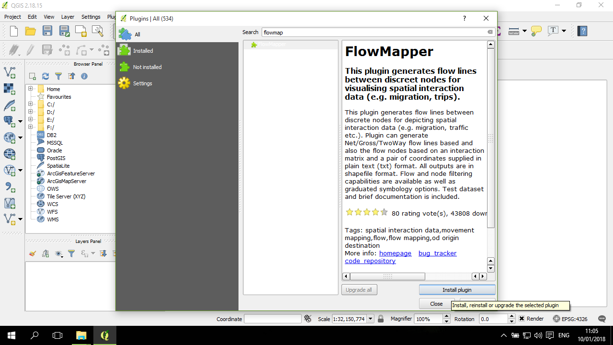
設定產生流動網絡的參數
資料是台北地區的捷運流動，因此背景先放入一個臺北市分區圖。
在安裝了 FlowMapper 套件後，可以到 Plugins-->FlowMapper-->Generate flow lines and nodes，進入製作流動網絡的視窗：
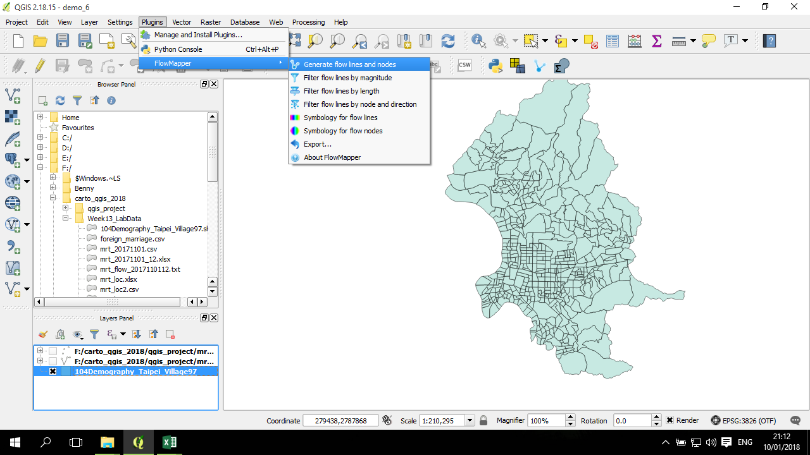
這視窗中有一些需要設定的東西：第一項是記錄點資料的檔案路徑，其下方的 coordinates are 請選擇 Cartesian，因為這資料是已投影過的；在Select file storing flow matrix 的欄位選擇前面準備好的 OD矩陣文字檔，flow type 選用 Net； 接下來的 Output 欄位選一個輸出線圖層的路徑與檔名；再下來的格子要標選，再往下的欄位填入點的輸出路徑與檔名。後面的這幾個格子都點選起來：
在 OK、Cancel 上方有一個 Single Symbol 下拉選單，將選項改成 Equal Interval，然後 No. of classes 填入 5，表示要將流量分成 5 組：
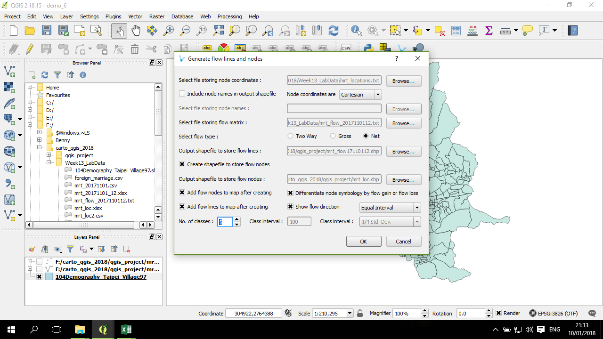
最後，確認設定都沒問題了，點 OK 開始執行：
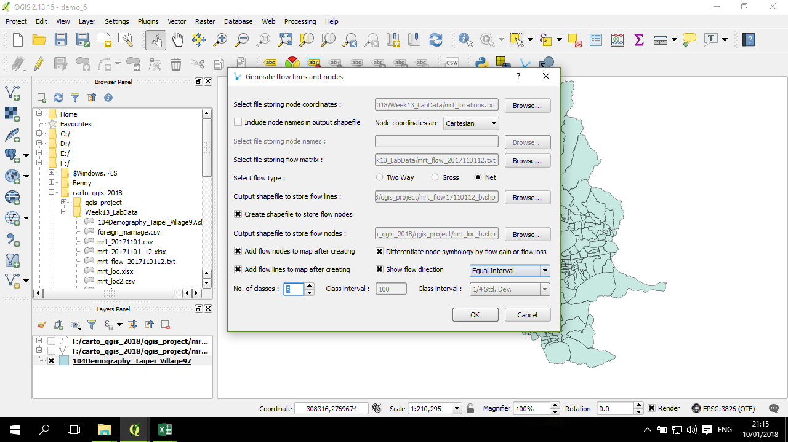
然後會挑出兩個視窗，這個視窗表示 線圖層已產生：
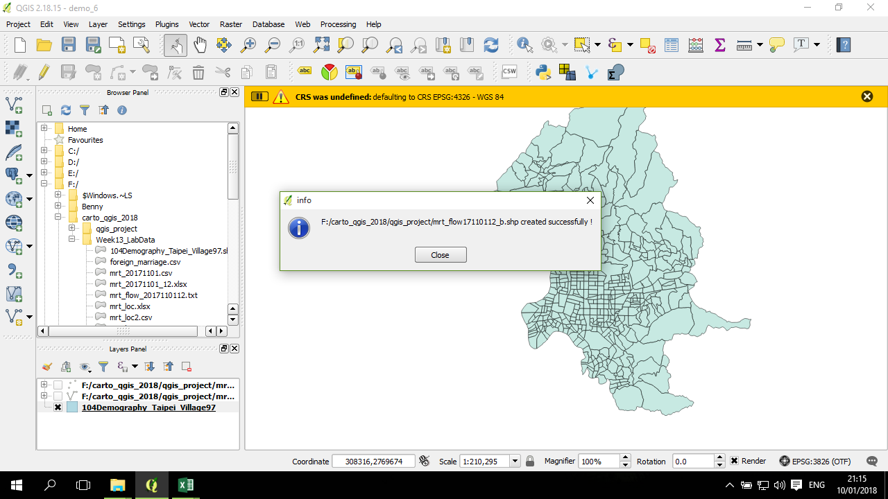
定義圖層的投影座標系統
不過，上述點、線的產生過程並沒有指定產生的圖層的投影系統，因此這裡需要自行設定：
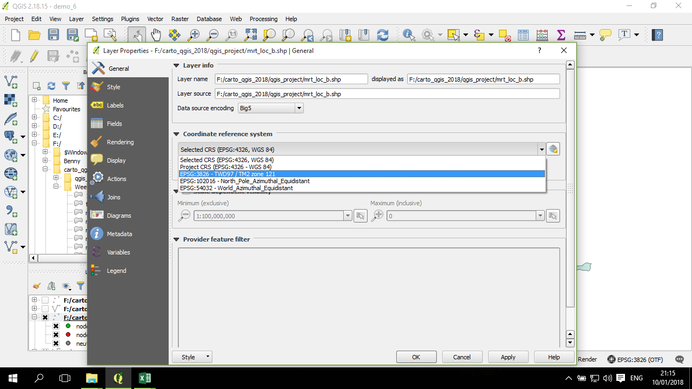
以範例來說，要設定成 TWD 97 投影系統 (EPSG:3828)
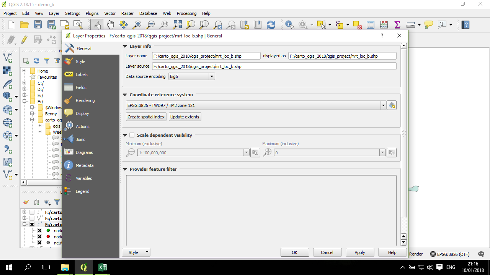
確認好點的投影後，點圖層就回到這些捷運站應該在的地方了：
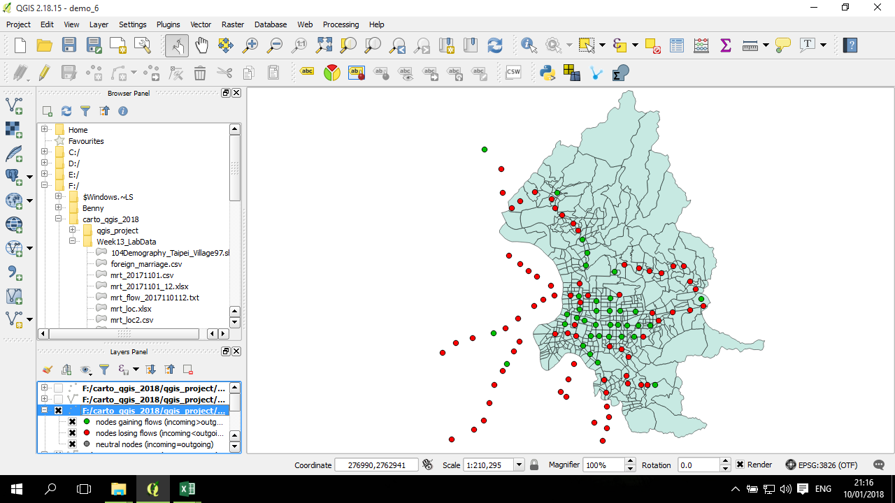
一樣的，對新產生的線圖層也作一樣的投影系統的定義：
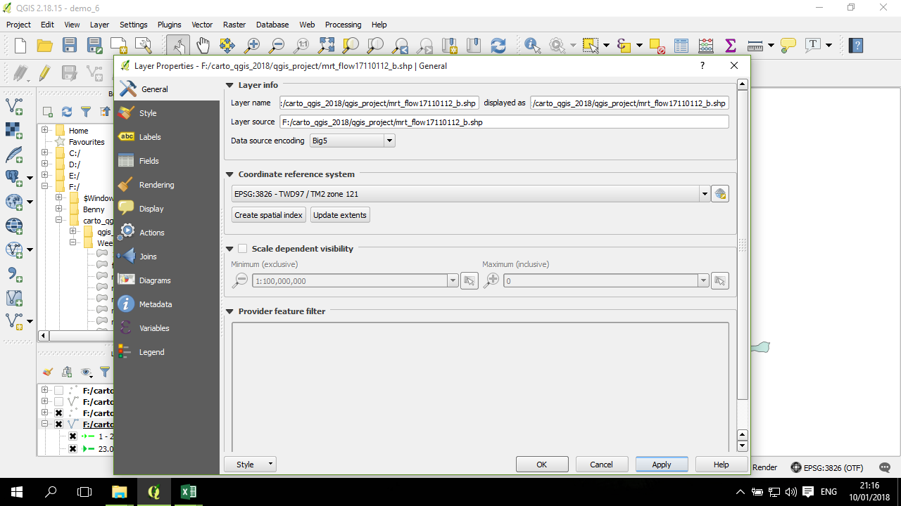
線也回來了，不過這時候的網絡(幾乎)是全網絡：
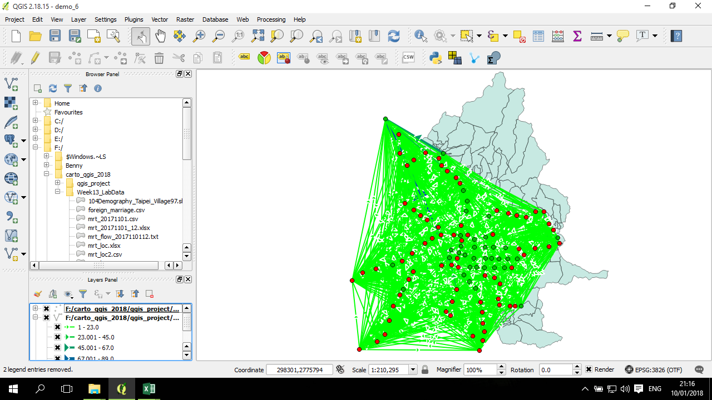
全網絡看起來會過度複雜， 可能會導致視覺上沒有意義。
調整網絡
這時候需要處理的是把流量最低的數層給移除掉，因為這些線段上的移動量很低，繪製出來可能並沒有多大的意義。
處理方式是，在左邊圖層列表中，線圖層底下將最低的那組旁邊的標記給取消掉：
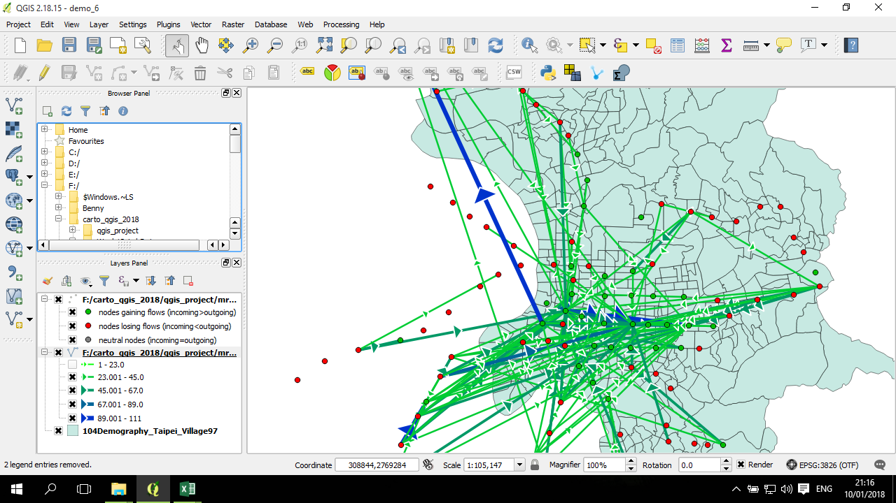
上圖看起來還是有點複雜，因此再把第二高的組給取消掉：
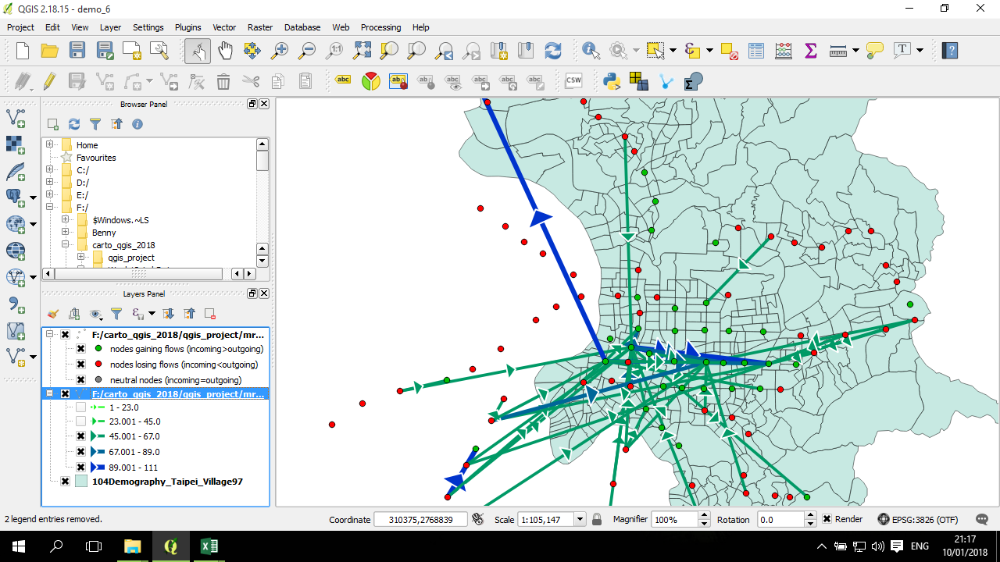
目前看起來相對較好了：
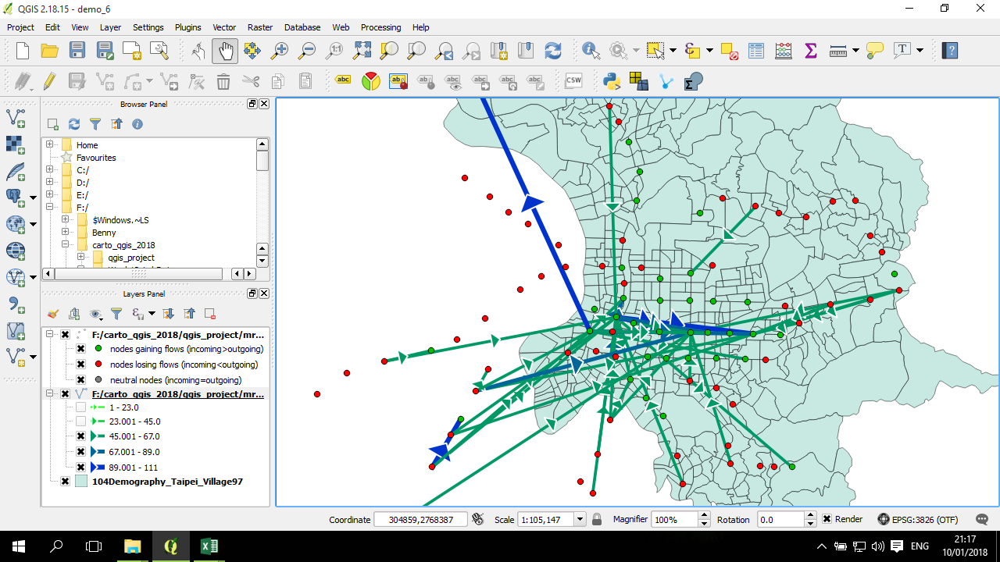
繪製出圖
用 composer 的工具 來繪製出圖：
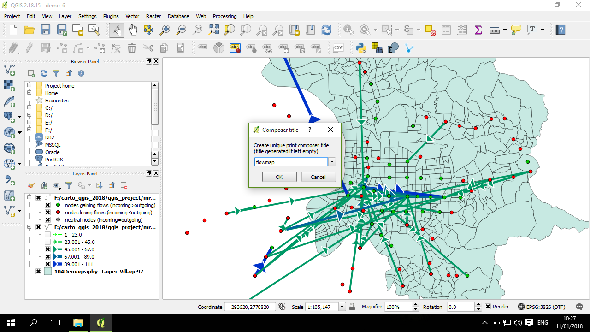
加入地圖、圖例、並設定好圖例資訊、以及比例尺，這地圖初步完成：
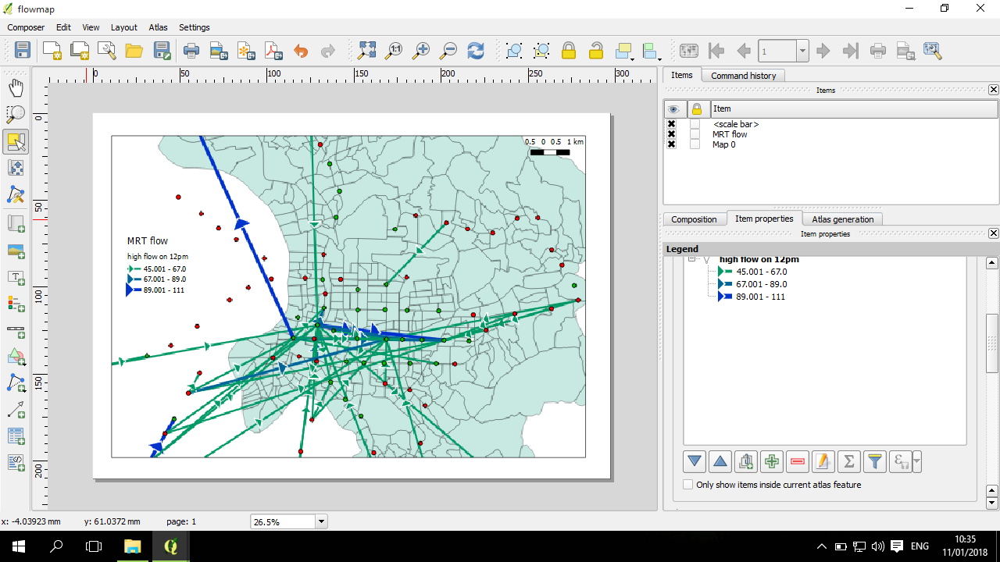
這是初步成品圖：
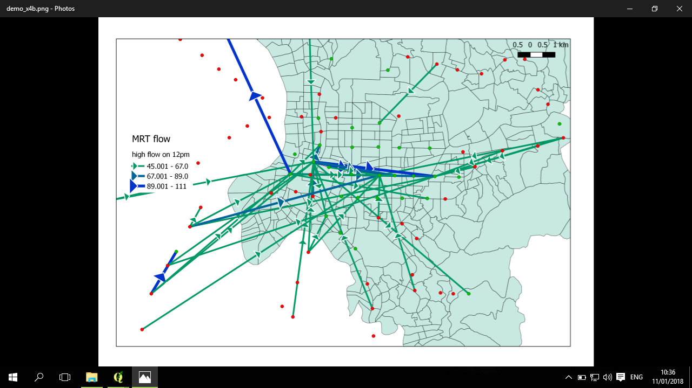